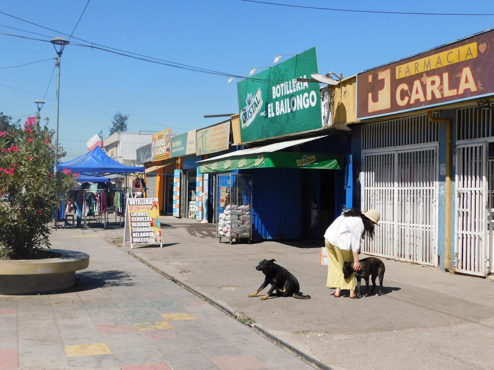

I'm an urban planner and researcher based in New York City, drawn to the spaces where cities reveal something true about the people who inhabit them — festivals, public squares, informal settlements, and everything in between.
I recently completed my Master's in Urban Planning at Columbia GSAPP, where my thesis examined Bonnaroo Music & Arts Festival as a temporary city and what it reveals about public space, commodification, and collective imagination. Before and during graduate school, I worked as an Assistant Planner for the City of Ojai, California, where I focused on affordable housing, ordinance development, and digital permitting.
I care deeply about community engagement, about creating processes where people feel heard and where their input actually shapes outcomes.
I'm currently looking for roles in New York City at the intersection of planning, civic engagement, and public programming.
